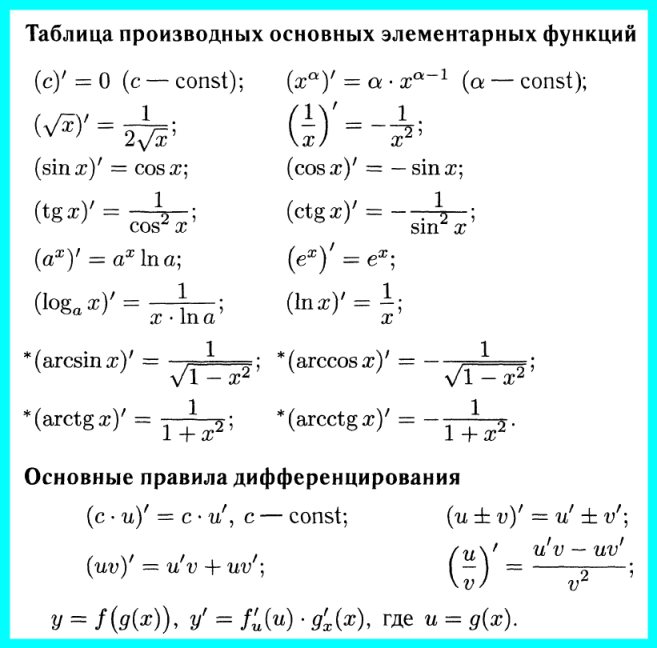

Для успешного решения задач такого типа необходимо знание такого понятия как производная, а также умение находить её
1. Найдите наибольшее значение функции f(x)=(x+4)^2(x+3) на отрезке [–5; –3,5]
Ответ
-4
2. Найдите точку минимума функции y=1,5x^2–42x+144lnx
Ответ
8
3. Найдите наибольшее значение функции y=12tgx–12x+3π–5 на отрезке [–π/4; π/4].
Ответ
7
4. Найти наибольшее значение функции y=3/(5+2cosx) на отрезке [π/2; 4π/3]
Ответ
0,75
5. Найдите точку максимума функции у=–(1/3)x√x+4x+11.
Ответ
64
6. Найдите точку максимума функции y=√–6+12x–x2
Ответ
6